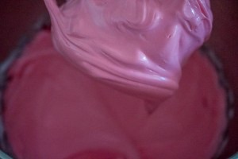
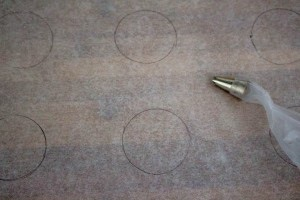
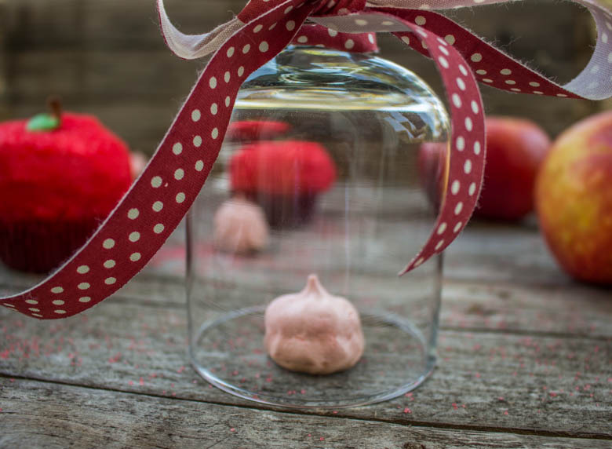
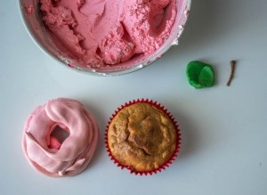
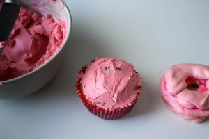
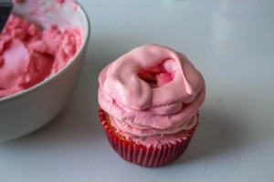
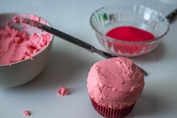
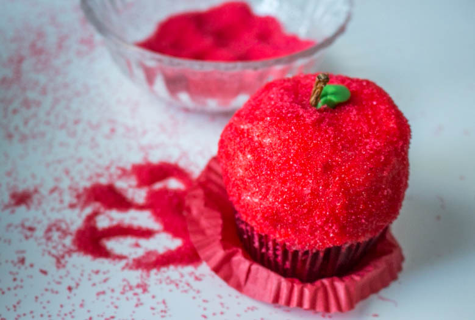
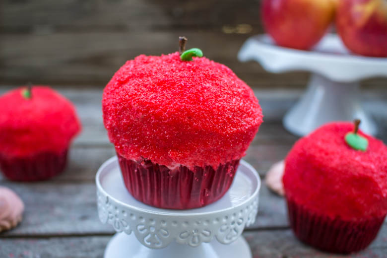
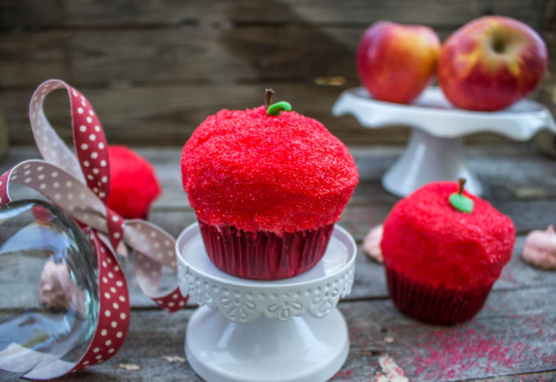

Quand un cupcake se déguise en pomme...

On se retrouve ici pour la première édition de la
Ça y est c’est aujourd’hui!!!! Jour de publication des recettes de la Foodista Challenge! Je suis très heureuse d’avoir organisé ce nouveau défi culinaire et vu les photos que j’ai déjà reçu, cette toute première édition nous réserve de belles et gourmandes participations!
Pour ceux qui se demandent ce qu’est la Foodista Challenge en voici un petit résumé :
Il s’agit d’un défi culinaire que j’ai décidé d’organiser qui permettra aux différentes blogueuses/blogueurs et non blogueurs de partager leur passion pour la cuisine et la pâtisserie autour d’un thème commun agrémenté de deux petites règles du jeu qui sont imposées par la marraine (oui j’ai bien dit 2) !
La Foodista Challenge a comme but principal de s’amuser tous ensemble, permettra de découvrir de nouveaux blogs, de s’inspirer, d’échanger et surtout de rire un bon coup avec ces petites règles du jeu imposées !
Pour cette première édition, le thème choisi était : CUPCAKES & MUFFINS avec les deux règles suivantes à respecter :
Bien que je sois la marraine de cette édition, la lettre P m’a posé quelques petits soucis… Et oui…! Pour la petite histoire au départ j’avais choisi une autre lettre qui m’arrangeait davantage avec une recette déjà bien présente dans ma tête!! Mais je me suis finalement dit pourquoi ne pas partir de zéro comme tout le monde et réfléchir moi aussi à une recette en me creusant un peu les méninges! Surtout que si j’ai créé la Foodista Challenge c’est bien pour réfléchir et créer de nouvelles recettes!! Mon chéri s’en est donc mêler et sans réfléchir m’a lâché la lettre P (je l’ai maudit longtemps pour ça 🙂 ).
Bien qu’il existe énormément d’ingrédients commençant par la lettre P, je suis tout simplement partie sur la pomme en décidant d’axer aussi mon travail sur la déco (ce que j’aime faire par dessus tout)!!
Je vous propose alors un cupcake pomme cannelle sirop d’érable (mmmmmmh) avec un glaçage meringue cream cheese.
Je dois vous avouer que j’ai beaucoup (beaucoup, beaucoup, beaucoup) galéré pour arriver à ce résultat. En effet, il me fallait la forme d’une pomme^^. Après une nuit de réflexion (oui oui la nuit porte bien conseil), j’ai eu l’idée du glaçage meringué qui me permettrait d’obtenir un forme plutôt ronde…
Je vous laisse découvrir le résultat et n’hésitez pas à me faire part de vos impressions!
Ps : petit clin d’œil à un film et roman plutôt connu : aller vous deviner? 🙂 Beaucoup ont pensé à Blanche Neige 🙂 !! Il s’agissait finalement d’un petit clin d’œil à la célèbre saga « twilight » ^^
Ingrédients
- Sucre semoule - 100g
- Oeufs - 2
- Farine - 150g
- Levure chimique - 4 càc
- Crème fraiche - 4 càs
- Beurre - 80g
- Canelle - 1cac
- Pomme - 1 grosse ou 2 petites
- Sirop d'érable - 1càc 1/2
- Pincée de sel - 1
- Blanc d'oeuf à temp ambiante - 2
- Sucre - 125g
- Pincée de sel - 1
- Colorant rouge (facultatif) - 1 pointe de couteau
- Cream cheese type philadelphia - 300g
- Sucre glace - 3 càs
- Extrait de vanille - 1càc
- cannelle - 1càc
- Colorant rouge (facultatif) - 1 pointe de couteau
- Paillettes rouges - environ 80g
- Pâte à sucre verte
- Queues de vraies pommes ou minis bretzel
Instructions
- Préchauffer le four à 80°-100°
- Séparer les blancs des jaunes (attention il est préférable que les blancs soient à température ambiante)
- Verser les blanc dans un récipient avec une pincée de sel
- Battre les blanc d’œufs jusqu’à obtenir une texture mousseuse
- Verser petit à petit le sucre (en 3-4 fois) tout en continuant de battre
- Continuer de battre jusqu'à obtenir des blancs bien fermes
- Pour savoir si votre mélange est correct, en sortant les fouets vous devez voir apparaitre un pic au bout de vos fouets (appelé bec d'oiseau). J'ai fait le choix d'ajouter du colorant pour que la meringue se fonde parfaitement sous le cream cheese mais ce n'est pas une obligation!
- Pour cette recette, mes meringues vont être placées au dessus de mes cupcakes. Pour cela, j'avais besoin qu'elles aient la forme du dessus d'un cupcake. Je me suis donc aidé d'une caissette en reproduisant cette forme sur du papier cuisson.
- Remplir une poche à douille de la préparation et former la meringue sur le papier cuisson
- Enfourner les meringues pour un peu plus d'une heure (vous pouvez commencer la pâte à cupcakes à ce moment là)
- Toutes les 15 min ouvrez la porte du four pour laisser la vapeur se dégager
- Au bout d'1h-1h30 (selon four) vos meringues doivent se décoller facilement du papier cuisson
- Décoller les très délicatement et laisser de côté
- Préchauffer le four à 180°
- Couper la pommes en petits morceaux et faites la revenir avec un pointe de beurre dans une poêle. Réserver
- Dans une jatte, fouetter le beurre restant avec le sucre
- Ajouter les œufs un à un et mélanger
- Dans un bol, mélanger la farine, la cannelle, la levure et le sel
- Incorporer ce mélange à la préparation
- Ajouter le sirop d'érable et les pommes
- Remplir le fond des caissettes et ajouter un peu de compote de pomme (assez épaisse de préférence)
- Recouvrir les caissettes au 3/4 (pour cette recette j'ai remplis un peu moins des 3/4 car je ne voulais pas qu'ils montent trop haut afin de pouvoir poser ma meringue dessus)
- Enfourner 20 minutes à 180°
- Laisser refroidir avant de les glacer
- Dans un récipient, détendre le cream cheese avec l'extrait de vanille, ajouter la cannelle et le sucre glace (j'ai choisi de le colorer avec du colorant rouge en gel car même si je vais le recouvrir de paillettes rouges je ne préfère pas qu'on aperçoive du blanc sous les paillettes)
- Déposer une noix de glaçage sur la base du cupcake et l'étaler pour y faire adhérer la meringue
- Poser la meringue sur le dessus
- Recouvrir la totalité de la meringue avec le glaçage en commençant par les bords pour qu'elle adhère bien au cupcake
- Faire cette opération avec l'ensemble des cupcakes
- Une fois que tous les cupcakes ont été glacés avec le cream cheese il va falloir les recouvrir avec les paillettes rouges
- Plusieurs solutions : les rouler dedans (carrément!!!) ou les recouvrir a la main. Moi j'ai fait un mix des deux^^je les ai roulé et j'ai comblé les trous à la main...
- Planter un minis bretzels pour rappeler les queues des pommes ou comme moi utiliser directement les queues des pommes utilisées dans la recette
- Former de petites feuilles avec de la pâte à sucre verte ou de la pâte d'amande et le tour est joué!!










Les tips de la communauté
Cupcakes magnifiques et très créatifs. L'idée de les déguiser en pomme de Blanche-Neige (ou Twilight selon l'auteure) plaît beaucoup. Les lecteurs apprécient le travail créatif et le rendu visuel impressionnant. Recette qui demande du temps mais en vaut la peine.
Astuces
- Les paillettes + le soleil créent un effet mouillé apprécié sur le glaçage
- Le sucre sur les côtés rend les cupcakes encore plus attrayants
- La décoration simple en pomme fonctionne bien pour les enfants
- Important de refroidir complètement avant de décorer
Variantes suggérées
- Variante avec glaçage nature pour un aspect moins sucré